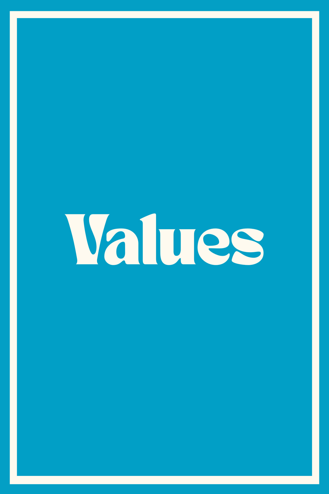
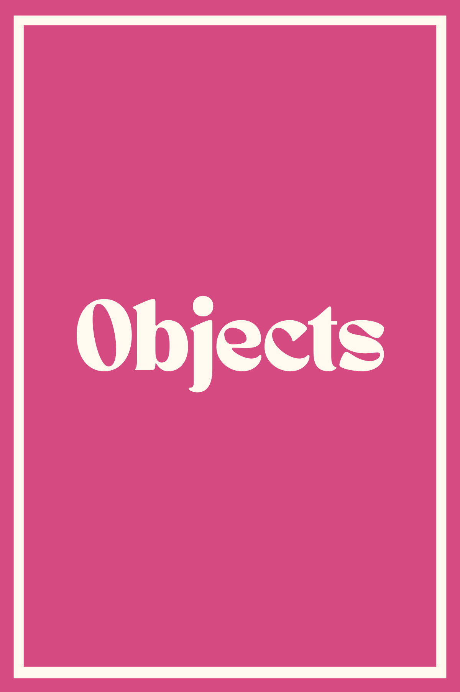
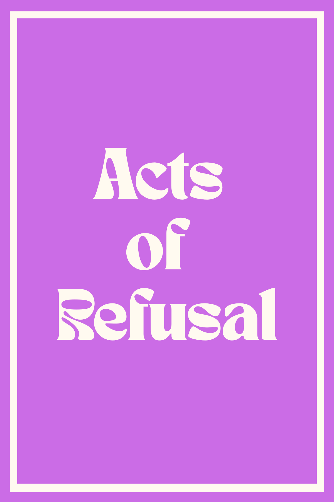
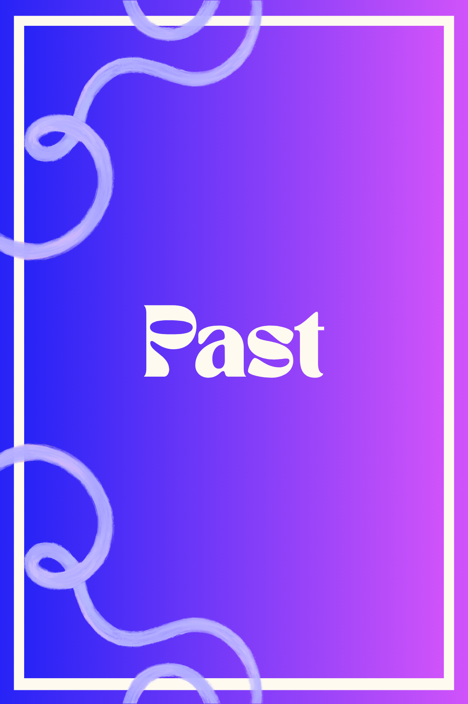
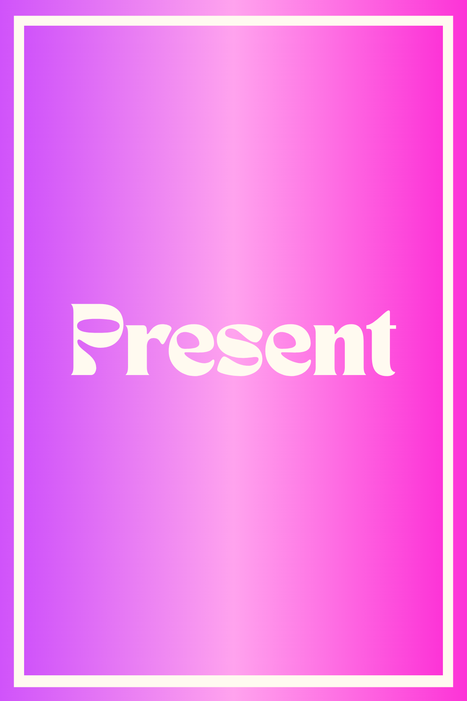
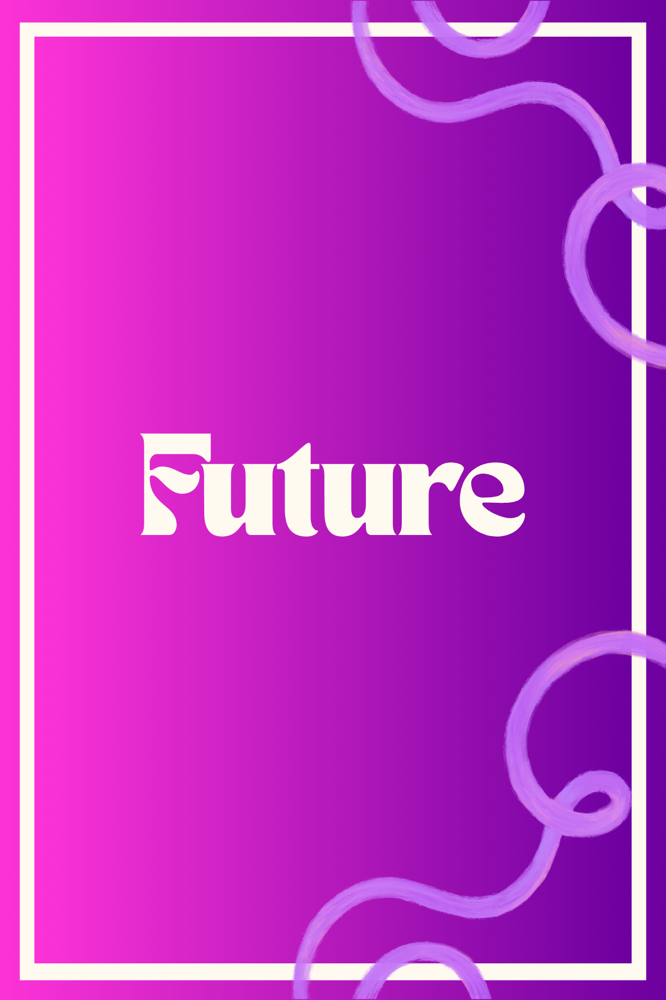
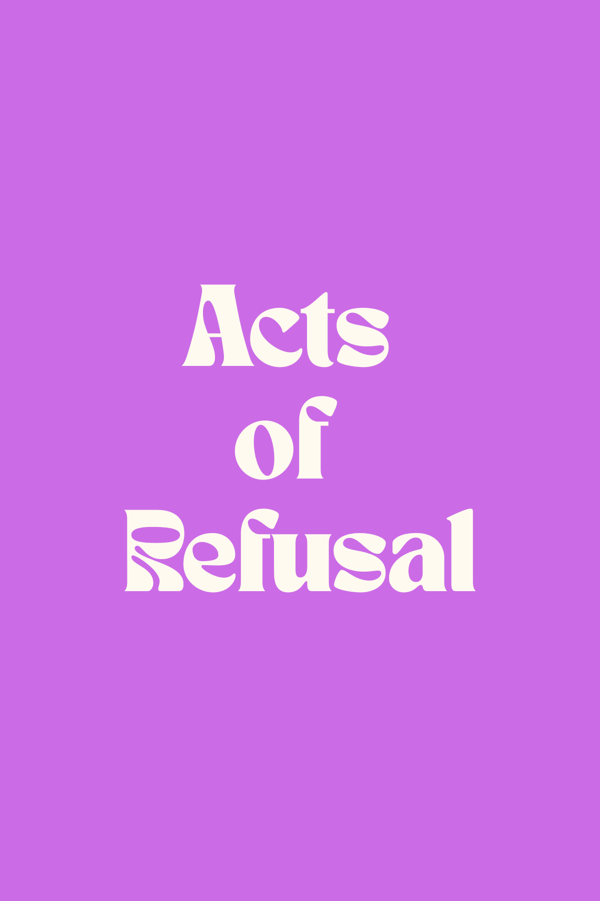

Welcome to the Art of Refusal:
Exploring the Complexities of Refusal Through a Conversation Card Deck!
Through "The Art of Refusal", we aim to conceptualize the idea of a "refusal mindset" — a way of thinking that can help people figure out to what level they can refuse in unfamiliar environments and scenarios. We contribute to previous literature by starting a conversation on who is able to refuse, and in what capacity, depending on their relationship with technology and identity within their immediate communities. We develop a framework that identifies the different complexities of repercussions when one refuses a certain technology for a specific cause. We propose a refusal mindset to help communities learn about different techniques to be able to refuse based on their comfort and ability to do so.
"exercising this way of thinking can lead to the development of a 'refusal mindset' — helping people find ways to refuse concerning technology in unfamiliar contexts to whatever extent they are able and comfortable."
Our goal is that this card deck can act as a starting point for people to think about the different technologies with which they interact on a daily basis and how they can raise awareness of or change the ways they interact with them.
Refusal is not a binary act — it is a spectrum, shaped by identity, power, context, and time. The same act of refusal that is straightforward for one person can be dangerous or impossible for another. As our political climate grows more tense and technology becomes increasingly invasive, what once was an effective refusal technique might become less effective or seemingly impossible for certain people to engage with.
The Conversation Card Deck
This first iteration of the deck spans six dimensions: Environments, Technology, Values, Objects, Acts of Refusal, and Past, Present & Future. Each dimension is designed to open a different facet of the refusal conversation.
Contexts
Context cards situate players in a specific environment or setting where a technology is being encountered — the airport, the grocery store, the hospital, a protest, a school, a border crossing. The same technology may be refusable in one context and nearly impossible to refuse in another. Context cards foreground this asymmetry and invite players to think about where refusal is possible, where it is constrained, and why.
Technology
Technology cards name a specific technology players are being asked to engage with — facial recognition, biometric scanners, location tracking, surveillance cameras, social media data collection, predictive policing software. These cards anchor the conversation in the real and present, grounding speculative reflection in the actual systems people encounter daily.
Values
Values cards name the principles that motivate a refusal — privacy, dignity, bodily autonomy, community safety, collective solidarity, environmental justice. These cards help players articulate why refusal matters, and help surface how different people may be motivated by different values even when refusing the same technology.
"refusing to give your biometric information at the grocery store is a very different act than refusing at the airport — the stakes, the consequences, and the available strategies are not the same."
Objects
Objects cards introduce a physical or digital tool that can support or enable an act of refusal — a whistle, a VPN, a piece of tape over a camera, a burner phone, a zine, a community alert system. These cards bring concreteness to the conversation, grounding refusal not just in attitude but in material practice.
Acts of Refusal
These cards name specific practices of refusal — opting out, covering, obfuscating, leaving, organizing, whistleblowing, sharing information, creating art, building alternatives. They expand the imagination of what refusal can look like and push back against the idea that refusal must be dramatic or high-risk to be meaningful.



Past, Present & Future
These cards situate players in time — inviting reflection on how refusal has been practiced historically, how it is being practiced now, and how it might be practiced in a future where current trends in technology and power continue or are disrupted. They connect individual acts of refusal to longer histories of resistance.



Key Concepts
⚖️ Critical Refusal
Garcia et al. describes "critical refusal" as "an informed practice of investigating power differences in order to generate more just and equitable alternatives to the status quo." Refusal has historically been used as a means of resistance against systems of oppression in indigenous and Black feminist studies. With technology came its weaponized use of sustaining white supremacy and post-colonial practices to control, surveil, and marginalize communities based on race, class, gender, and other social constructs.
🗄️ Data as Power
Data and the technological tools fed by it became the key mechanism ensuring that communities across the globe are represented from a Eurocentric perspective. Technology companies became the new front of colonial powers, making countries reliant on their resources and capitalizing on user identities in venues such as advertising. Vincent et al. explores ways users can "leverage" the reliance that companies have on them — flipping the power dynamic of tech dependency.
🪢 Intersectionality
Patricia H. Collins' matrix of domination shows that systems of oppression — race, gender, ability, sex — do not operate in isolation but interlock, resulting in people having various levels of privilege and power. This framework is essential when discussing refusal because it can drastically change an individual's ability to refuse in any given scenario. Identity combines with the spaces and times people are in to further complicate the feasibility of refusal.
🤺 Digital Resignation
"Digital resignation" describes a phenomenon where people genuinely care about exercising control over their data but feel powerless in terms of doing so. We theorize that engaging with refusal in an increasingly strict social environment can lead to similar feelings of resignation — where people want to say no to systems around them but feel unable. Whether someone even feels motivated or confident enough to refuse is a central part of this conversation.
🧠 Refusal Mindset
Scholars in privacy research have identified the importance of helping people develop a "privacy-first mindset" — a way of thinking about situations in a privacy-aware manner rather than following specific rules that become irrelevant as technology evolves. We propose extending this framework to refusal, helping people adapt to changing spaces and technologies so they can refuse to the extent that is feasible and comfortable for themselves.
Images From Our Card Deck

Future Works
Our hope for the near future is to aim to polish this website further, fix technical issues, and make it more accessible to our communities!